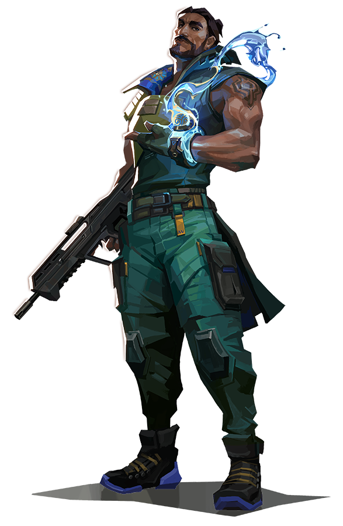

Astra

Brimstone
Clove

Harbor

Omen

A ghánai ügynök, Astra a kozmosz energiáit használja fel, hogy a csatatereket a szeszélye szerint formálja át. Asztrális alakjának teljes uralmával és a mély stratégiai előrelátás tehetségével mindig eonokkal megelőzi ellensége következő lépését.
Abilities:
Nova Pulse: A Nova Pulse rövid ideig támad, majd lecsap, és megrázza az összes játékost a területén.
Nebula: A Csillagot, hogy eloszlassa, és késleltetés után visszaküldi a csillagot új helyre. A disszipáció rövid időre hamis ködöt képez a csillag helyén, mielőtt visszatérne.
Gravity Well: A területen lévő játékosok a központ felé húzódnak, mielőtt az felrobbanna, így az összes játékos még mindig sebezhetővé válik.
Astral Form/Cosmic Divide: Egy végtelen kozmikus szakadék köti össze a két kiválasztott pontot. A Cosmic Divide blokkolja a golyókat és erősen tompítja a hangot.
Az Egyesült Államokból csatlakozott Brimstone orbitális arzenálja biztosítja, hogy csapata mindig előnyben legyen. Az a képessége, hogy precízen és biztonságosan tud szolgálni, páratlan földi parancsnoksá teszi.
Abilities:
Incendiary: Tűz gránát kilövéséhez, amely felrobban, amikor a padlóra kerül, és egy elhúzódó tűzzónát hoz létre, amely károsítja a zónán belüli játékosokat.
Sky Smoke: Füstfelhőket bocsát ki, amelyek blokkolják a látást a kiválasztott területen.
Stim Beacon: Felgyorsítja a csapattársakat, hogy elöbb érjünk a helyekre.
Orbital Strike: Egy elhúzódó orbitális csapásmérő lézer elindításához a kiválasztott helyen, amely idővel nagy sebzést okoz a kiválasztott területen elkapott játékosoknak.
A skót bajkeverő Clove a harc hevében és a halál hidegében is huncutságot követ el az ellenségekkel. A fiatal halhatatlan még a síron túlról is sejteti ellenségeit, hogy csak egy pillanatra térnek vissza az élőkhöz.
Abilities:
Meddle: Töredék, amely rövid késleltetés után kitör, és átmenetileg lecsillapítja az összes befogott célpontot.
Ruse: olyan felhőket indít el, amelyek blokkolják a látást a kiválasztott területeken. A szegfűszeg a halál után is használhatja ezt a képességét.
Pick-Me-Up: Megsérülnek vagy meghaltak, sietve és átmeneti egészségre tesznek szert.
Not Dead Yet: Miután feltámadt, Clove-nak meghatározott időn belül ölést vagy sebzést kell szereznie, különben meghal.
Az India partjairól származó Harbour megrohamozza a mezőt, ősi technológiát használva a víz felett. Habzó zuhatagokat és zúzó hullámokat szabadít fel, hogy megvédje szövetségeseit, vagy megdörzsölje azokat, akik szembeszállnak vele.
Abilities:
Cove: A talajba ütközéskor hozz létre egy elpusztítható vízpajzsot, amely blokkolja a golyókat.
High Tide: Küld előre vizet a talaj mentén. A vizet tudja irányítani . hajlítás közben, hogy korán megállítsa a vizet. Az eltalált játékosok LASSÍTVA
Cascade: Véget vet az előre és a falakon keresztül gördülő hullámnak. HASZNÁLJA ÚJRA a hullám leállításához. Az eltalált játékosok LASSÍTVA.
Reckoning: Képesség benyomásával lesz egy kör amiben ha benne van az ellenfél játékosa le lesz lassítva És nem tud pontosan lőni.
Egy emlék fantomja, az Ómen az árnyékban vadászik. Vakítja az ellenséget, átteleportál a pályán, majd hagyja, hogy a paranoia elhatalmasodjon, miközben ellensége tülekodik, hogy megtudja, hol csaphat le legközelebb.
Abilities:
Paranoia: Rövid időre csökkentve az összes játékos látótávolságát, amelyhez hozzáér. Ez a lövedék egyenesen áthaladhat a falakon.
Dark Cover: Belép a szakaszos világba amely átlatja a oldalakat árnyékgömböt a megjelölt helyre dobja, és hosszantartó árnyékgömböt hoz létre, amely blokkolja a látást.
Shround Step: Árnyékjárási képesség nézze meg annak hatótávolságát majd teleportáljon a megjelölt helyre.
From The Shadow: Elkezd teleportálni a kiválasztott helyre. Teleportálás közben az Omen Árnyékként jelenik meg, amelyet az ellenség elpusztíthat, hogy megszakítsa a teleportálását.
Az amerikai vegyész, Viper mérgező vegyi eszközök sorát veti be, hogy irányítsa a csatateret, és elfojtsa az ellenség látását. Ha a méreganyagok nem ölik meg a zsákmányt, az elmejátékai biztosan meg fogják tenni.
Abilities:
Poison Cloud: El dobja a kibocsátót, amely örökké megmarad a körben. Újra használható a mérgező gázfelhő létrehozásának képességét üzemanyag árán.
Toxic Sreen: Gázkibocsátók hosszú sorát telepítsék. Újra használható a a képesség, hogy magas mérgező gázfalat hozzon létre üzemanyag árán. Ez a képesség többször is újra használható.
Snake Bite: El indít egy tartályt, amely összetörik, amikor a padlót éri, és egy tartós vegyi zónát hoz létre, amely károsítja és lelassítja az ellenséget.
Viper S Pit: Be permetez egy vegyi felhőt a Viper körül minden irányba, és egy nagy felhőt hozzon létre, amely csökkenti a benne lévő játékosok látótávolságát és maximális egészségi állapotát.